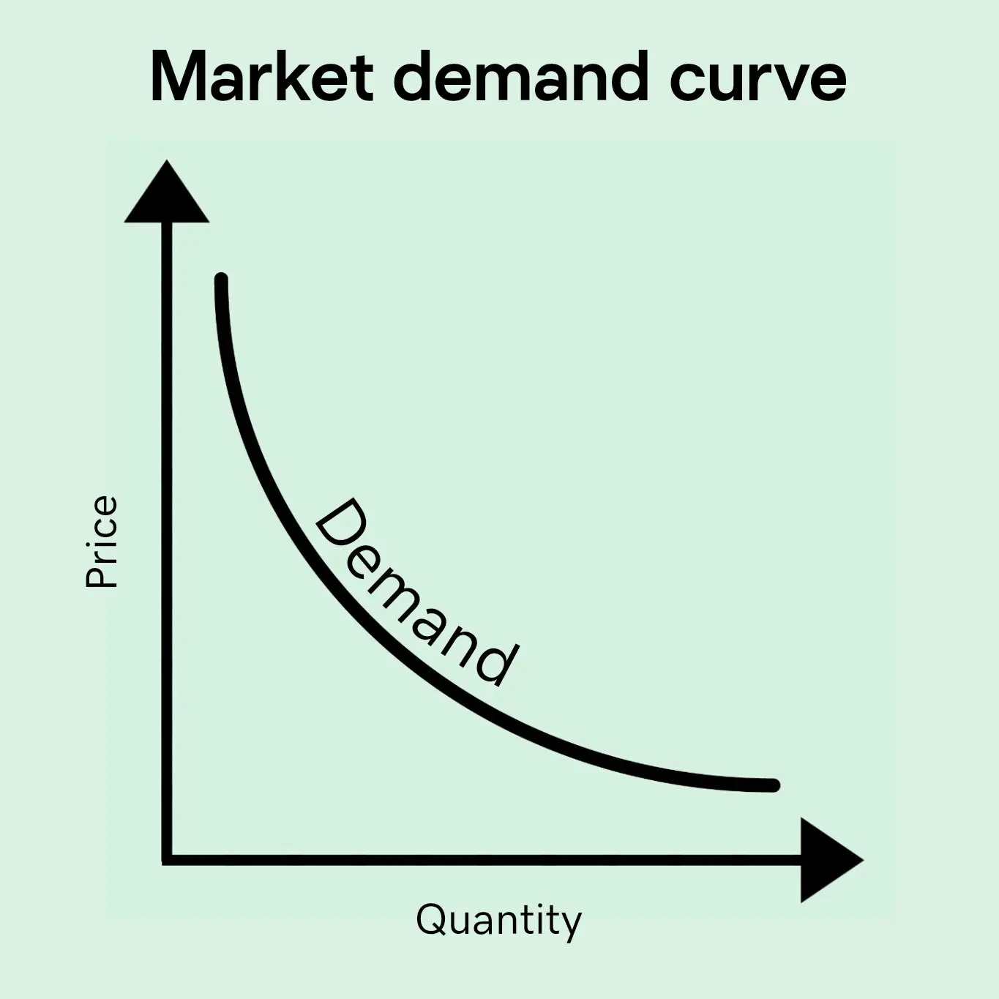
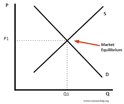
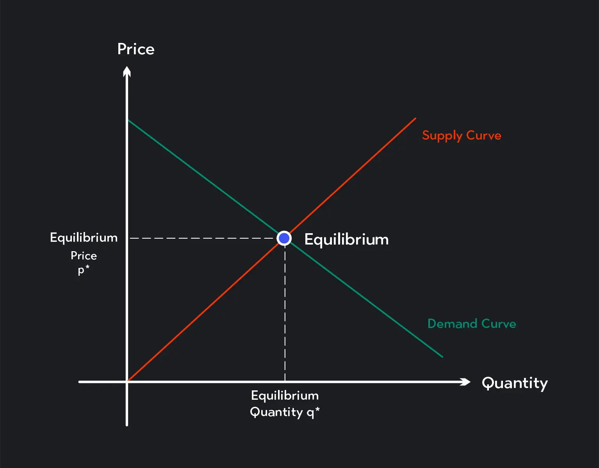
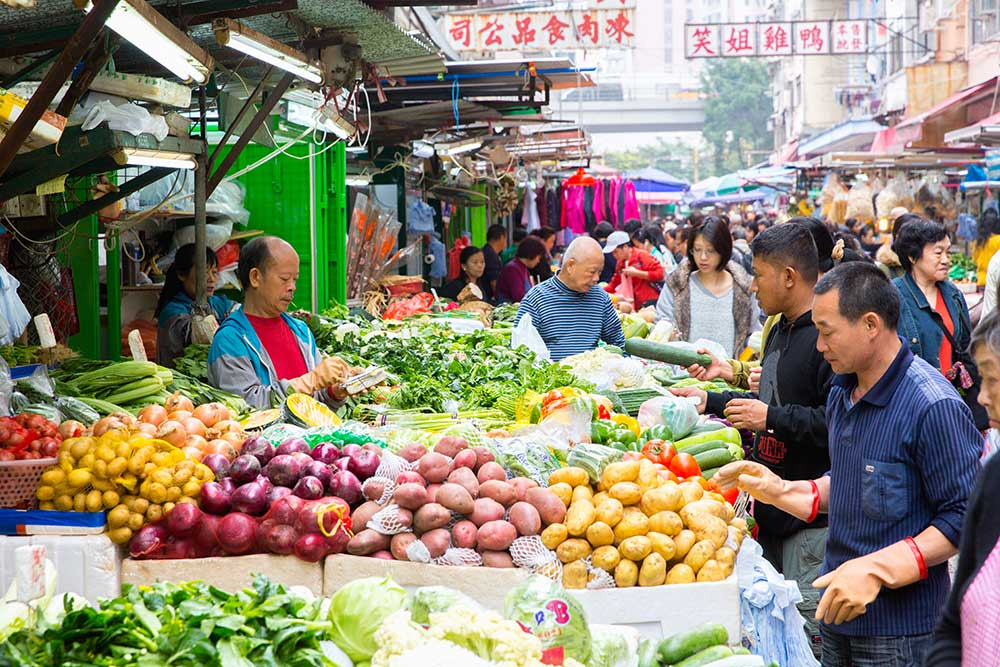
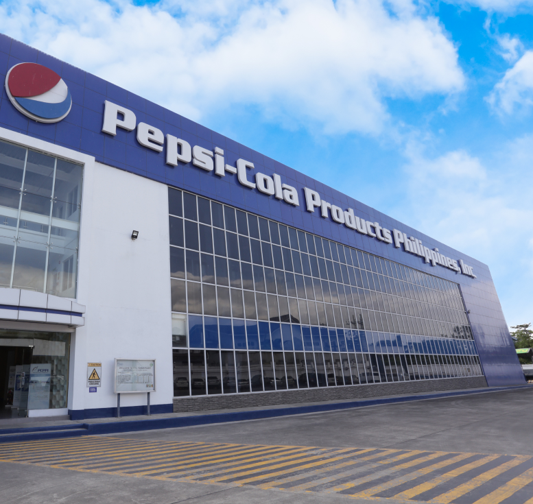

Araling Panlipunan Lessons!
Lesson 1
Kahulugan ng Demand
Ang demand ay tumutukoy sa kakayahan at kagustuhan ng mamimili na bumili ng produkto o serbisyo sa isang takdang presyo at panahon. Hindi lahat ng gusto ay demand – dapat ay may kakayahang bumili (purchasing power).
Formula: Demand = KAGUSTUHAN + KAKAYAHAN
Market Demand
Individual Demand: demand ng isang mamimili
Market Demand: pinagsama-samang demand ng lahat ng mamimili sa pamilihan
Demand Function
Ipinapakita ang relasyon ng presyo (P) at dami ng demand (Qd) sa pamamagitan ng ekwasyon:
Qd = a − bP
Kung saan:
Qd = dami ng demand
a = pinakamataas na demand kung libre ang presyo
b = slope o pagbabago sa demand sa bawat pagbabago ng presyo
P = presyo
Halimbawa: Qd = 100 − 5P. Kung P = ₱10 → Qd = 50.
Batas ng Demand
Kapag tumaas ang presyo, bumababa ang dami ng demand; kapag bumaba ang presyo, tumataas ang dami ng demand (ceteris paribus). Magkasalungat ang relasyon ng presyo at demand.
Pagbabago sa Dami ng Demand (Movement Along the Curve)
Nangyayari kapag presyo lamang ang nagbago.
- Pagtaas sa Dami ng Demand → kapag bumaba ang presyo
- Pagbaba sa Dami ng Demand ↓ kapag tumaas ang presyo
Pagbabago sa Demand (Shift of the Curve)
- Pagtaas ng Demand (Shift Right) → tumaas ang kita, dumami ang mamimili, tumaas ang popularidad, bumaba ang presyo ng complementary goods, tumaas ang presyo ng substitute goods
- Pagbaba ng Demand (Shift Left) ← bumaba ang kita, nabawasan ang mamimili, nawala sa uso, tumaas ang presyo ng complementary goods, bumaba ang presyo ng substitute goods
Elastisidad ng Demand (Price Elasticity of Demand – EP/PED)
Sukat kung gaano kasensitibo ang mamimili sa pagbabago ng presyo.
Formula (Midpoint / Arc Method):
EP = [(Q2 − Q1) / ((Q1 + Q2) / 2)] ÷ [(P2 − P1) / ((P1 + P2) / 2)]

Lesson 2
Lesson 2 – Supply
Kahulugan ng Supply
Ang supply ay tumutukoy sa dami ng produkto o serbisyo na handang ipagbili ng mga prodyuser sa isang takdang presyo at panahon.
Batas ng Supply (Law of Supply)
Kapag tumaas ang presyo, tataas ang dami ng supply → kapag bumaba ang presyo, bababa ang dami ng supply (ceteris paribus). Direktang relasyon ang presyo at supply.
Supply Schedule at Supply Curve
- Supply Schedule – talaan ng dami ng produkto na handang ipagbili sa bawat presyo.
- Supply Curve – grapikong representasyon ng supply schedule; pataas ang kurba dahil tumataas ang supply kapag tumataas ang presyo.
Pagtaas ng Supply
- Nangyayari kapag ibang salik bukod sa presyo ay nagdulot ng pagtaas ng dami ng supply.
- Lumilipat ang buong kurba ng supply pakanan →
- Halimbawa: Pagtaas ng teknolohiya, pagbaba ng presyo ng hilaw na materyales, pagdami ng prodyuser.
Pagbaba ng Supply
- Nangyayari kapag ibang salik bukod sa presyo ay nagdulot ng pagbaba ng dami ng supply.
- Lumilipat ang kurba ng supply pakaliwa ←
- Halimbawa: Pagtaas ng gastos sa produksiyon, kakulangan sa hilaw na materyales, kalamidad.
Paggalaw sa Iisang Kurba ng Supply
- Nangyayari kapag nagbago ang presyo lamang ng produkto.
- Pagtaas ng quantity supplied ↑ paggalaw pataas sa kurba.
- Pagbaba ng quantity supplied ↓ paggalaw pababa sa kurba.
Elastisidad ng Supply (Price Elasticity of Supply – EP/Es)
Sukat kung gaano kasensitibo ang dami ng supply sa pagbabago ng presyo.
Formula (Midpoint / Arc Method):
Es = [(Q2 − Q1) / ((Q1 + Q2) / 2)] ÷ [(P2 − P1) / ((P1 + P2) / 2)]
Q1 = dating dami supplied
Q2 = bagong dami supplied
P1 = dating presyo
P2 = bagong presyo

Lesson 3
MGA URI NG ELASTISIDAD
1.Elastic (> 1)
Kahulugan: Mas malaki ang naging bahagdan ng pagtugon ng QD (quantity demanded) kaysa sa bahagdan ng pagbabago sa presyo.
2.Inelastic (< 1)
Kahulugan: Mas maliit ang naging bahagdan ng pagbabago ng QD kaysa sa bahagdan ng pagbabago sa presyo.
3.Unitary (= 1)
Kahulugan: Pareho ang bahagdan ng pagbabago. Tapat o pantay ang pagbabago ng presyo at quantity demanded.
4.Perfectly Elastic (∞)
Kahulugan: Anumang pagbabago sa presyo ay magdudulot ng walang hanggan (infinite) na pagbabago sa quantity demanded.
5.Perfectly Inelastic (0)
Kahulugan: Ang quantity demanded ay hindi tumutugon sa anumang pagbabago ng presyo.
PRICE ELASTICITY NG SUPPLY
Paraan na ginagamit upang masukat ang magiging pagtugon ng quantity supplied ng mga prodyuser sa tuwing may pagbabago sa presyo nito.
FORMULA NG PRICE ELASTICITY OF DEMAND (PED)
Ed = (% Pagbabago sa Quantity Demanded) ÷ (% Pagbabago sa Presyo)
Ang ibig sabihin nito ay sinusukat ng elasticity kung gaano kalaki ang pagtugon ng mga mamimili sa pagbabago ng presyo ng isang produkto.
Paano kalkulahin ang % Pagbabago
% Pagbabago sa Quantity Demanded — ibabawas ang lumang quantity demanded mula sa bagong quantity demanded, hahatiin sa lumang quantity demanded, at imumultiply sa 100.
% Pagbabago sa Presyo — ibabawas ang lumang presyo mula sa bagong presyo, hahatiin sa lumang presyo, at imumultiply sa 100.
Kapag nakuha na ang dalawang porsyento, hahatiin ang pagbabago sa quantity demanded sa pagbabago sa presyo. Ang magiging sagot ay ang elasticity coefficient na nagsasabi kung ang produkto ay elastic, inelastic, o unitary.
Interpretasyon: Kung ang resulta ay higit sa 1, ang demand ay elastic. Kung mas mababa sa 1, ito ay inelastic. Kung eksaktong 1, unitary.
Lesson 4
Kahulugan ng Market Equilibrium
Ang market equilibrium ay ang punto kung saan ang dami ng demand at dami ng supply ay magkapantay sa isang takdang presyo. Dito, walang labis o kakulangan sa pamilihan.
Equilibrium Price at Quantity
- Equilibrium Price (Pe) → presyo kung saan nagtatagpo ang demand at supply.
- Equilibrium Quantity (Qe) → dami na binibili at binebenta sa equilibrium price.
Paano Nakukuha ang Equilibrium
1. Pagsamahin ang demand at supply schedules o curves.
2. Hanapin ang presyo kung saan Qd = Qs.
3. Presyo kung saan nagkakatugma ang demand at supply → Pe.
4. Dami sa puntong iyon → Qe.
Surplus at Shortage
- Surplus (Excess Supply) → kapag P > Pe, dami ng supply > dami ng demand.
Solusyon: Bumababa ang presyo → bababa ang supply at tataas ang demand hanggang maabot ang Pe.
- Shortage (Excess Demand) → kapag P < Pe, dami ng demand > dami ng supply.
Solusyon: Tumaas ang presyo → bababa ang demand at tataas ang supply hanggang maabot ang Pe.
Pagbabago sa Equilibrium
- Shift ng Demand Curve → nagdudulot ng pagbabago sa Pe at Qe.
- Pagtaas ng Demand → Pe → Qe tumataas
- Pagbaba ng Demand → Pe → Qe bumababa
- Shift ng Supply Curve → nagdudulot ng pagbabago sa Pe at Qe.
- Pagtaas ng Supply → Pe bumababa, Qe tumataas
- Pagbaba ng Supply → Pe tumataas, Qe bumababa


Lesson 5
Kahulugan
Ang estraktura ng pamilihan ay tumutukoy sa uri at katangian ng kompetisyon sa pagitan ng mga prodyuser sa pamilihan.
3 ELEMENTO NG ISANG PAMILIHAN
1.Mamimili
2.Prodyuser/negosyante
3.Produkto
PAGKAKAIBA NG MGA ANYO / URI NG PAMILIHAN
1.Bilang at laki ng prodyuser o konsyumer
2.Uri ng produkto o serbisyo
3.Kontrol sa pagpasok sa pamilihan
4.Kontrol sa presyo
5.Paggamit ng di-presyong kompetisyon
URI NG PAMILIHAN
Lokal / Panrehiyon / Pambansa / Pandaigdigan
GANAP NA KOMPETISYON
Maraming konsyumer at prodyuser sa industriya
Ang mga produkto ng mga kalakalan sa industriya ay magkakatulad
Ang mga kalakalan sa industriya ay tinatawag na price takers
Malayang nakapapasok at nakalalabas ang mga kalakalan sa produksyon
Walang kontrol sa presyo
Ginagamit sa ganitong pamilihan: Isang estruktura ng pampamilihan na kung saan ang indibidwal na kalakalan ay walang malakas na kontrol sa presyo (price taker).
DI-GANAP NA KOMPETISYON
Sa di-ganap na kompetisyon makikita ang iba't ibang anyo ng pamilihan kung saan may kontrol o impluwensiya ang ilan sa presyo o produkto.
MONOPOLYO
Iisa ang prodyuser
Ang produkto ay walang malapit na kapalit
Ang monopolista — price maker ng produkto
Napakahirap ang pagpasok ng mga bagong prodyuser sa ganitong pamilihan
Ang pag-aanunsyo sa produkto ay maaaring gamitin o hindi
OLIGOPOLY
Kakaunti lamang ang mga prodyuser sa industriya. Ang mga produkto ay maaaring magkakatulad o magkakaiba. Malaki ang kontrol ng mga kalakalan pagdating sa presyo.
Mahirap ang papasok ng mga bagong prodyuser. Gumagastos ng malaki ang mga kalakalan sa pag-aanunsyo, pananaliksik, at pag-unlad.
MONOPOLISTIC COMPETITION
May katamtamang dami ng mga prodyuser at konsyumer. Ang mga industriya ay agresibong nakikipagkompetensya sa isa’t isa. Mayroong malawakang pag-aanunsyo.
May kaunting control sa presyo dahil sa pagkakaiba-iba ng produkto. Madali ang pagpasok ng mga bagong prodyuser kung ikukumpara sa monopoly at oligopoly.
MONOPSONY
Mayroon lamang iisang konsyumer ngunit maraming prodyuser ng produkto at serbisyo.
May kapangyarihan ang konsyumer na maimpluwensiyahan ang presyo sa pamilihan.


Lesson 6
Kahalagahan ng Pamahalaan sa Ekonomiya
- Pamahalaan ay tumutulong sa pagpapanatili ng kaayusan sa pamilihan
- Nagbibigay proteksyon sa mamimili at prodyuser
- Nagpapatupad ng regulasyon upang maiwasan ang monopolisasyon at labis na kompetisyon
Mga Bahagi ng Pamahalaan
1. Pagbibigay ng Buwis (Taxes)
- Pinagkukunan ng pondo para sa pampublikong serbisyo
- Nakakaapekto sa presyo at demand ng produkto
2. Pagbibigay ng Subsidy
- Pinapababa ang gastos ng prodyuser upang mas maraming supply
- Halimbawa: subsidy sa bigas, kuryente, edukasyon
3. Pagkontrol sa Presyo (Price Control)
- Price Ceiling → pinakamataas na presyo (hal. gamot)
- Price Floor → pinakamababang presyo (hal. minimum wage)
4. Regulasyon sa Kalikasan at Kaligtasan
- Environmental regulations, labor laws
- Tinitiyak ang kaligtasan at sustainability
5. Pagbibigay ng Pampublikong Kalakal at Serbisyo
- Halimbawa: kalsada, paaralan, ospital, kuryente
6. Pagpapatupad ng Patakaran sa Kalakalan
- Tariffs, import/export regulations
- Proteksyon sa lokal na industriya at ekonomiya